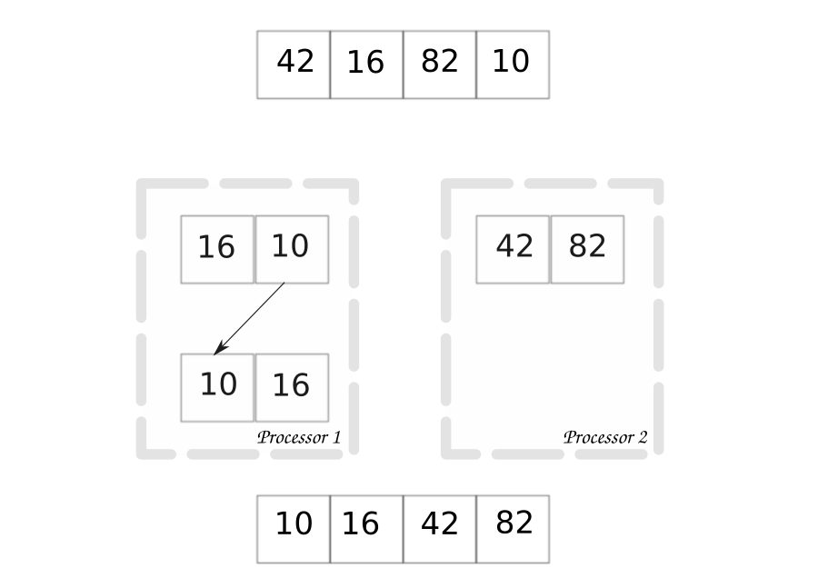
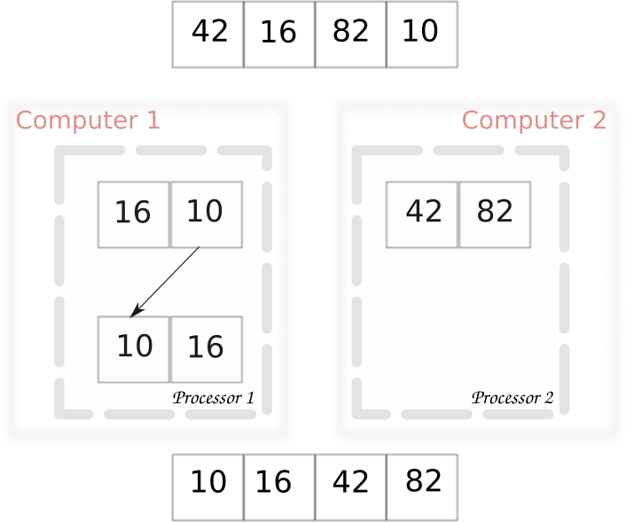

Distributed Sort¶
Distributed and parallel algorithms are conceptually identical. The only difference is the interface used to share data between processors. In distributed computing we use a network, while shared memory parallel computing uses pipes or semaphores. This difference changes the libraries you will use, but the concepts are the same.
{kind=link}
Above is the parallel sort algorithm shown earlier. The distributed algorithm is identical. Except that we indicate that each processor resides on a separate computer.
{kind=link}
At this point terminology starts to get fuzzy. Both methods are technically parallel computing - which is any computing method that utilizes multiple processors. But distributed computing specifically involves networked communication between system parts. Technically speaking, not all distributed systems are parallel, but all parallel systems that use multiple computers are distributed. In practice, we only use the differing terms here to distinguish the different methods. Distributed computing can alleviate large memory limitations, while shared memory parallel computing can not.